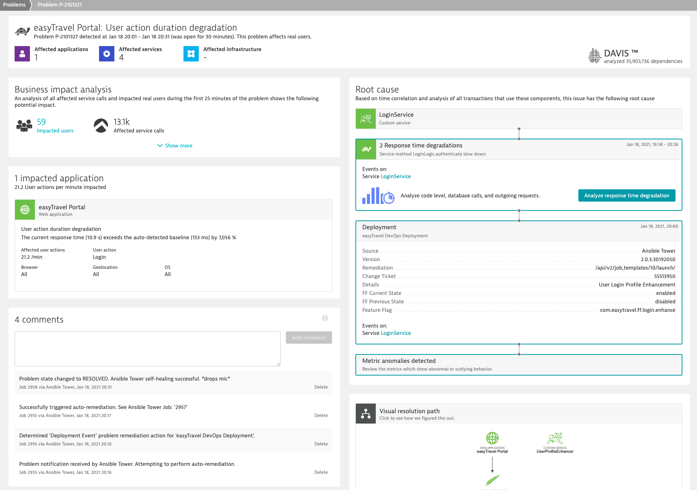

This section contains the various approaches to get started with Redhat Ansible. This includes the various flavors of Ansible including Redhat Ansible Tower.
What You'll Learn
- Installing Ansible
- Install OneAgent with Ansible
- Auto-Remediation use case
- Discover and Explore Dynatrace
In this exercise, we will deploy the OneAgent to a Linux instance with Ansible.
Based off our Dynatrace Ansible Github, you can rollout Dynatrace Oneagent easily across on Linux and Windows Operating Systems with different available configurations and ensures the OneAgent service maintains a running state. It also provides the tasks to interact with the various OneAgent configuration files.
Following the steps from our documentation, we will use an Ansible collection to orchestrate OneAgent deployment.
You can also use other Ansible playbooks examples can be seen here
Deploying applications efficiently requires using an automated delivery pipeline. Dynatrace tracks all key metrics through the various CI/CD stages into production. Through understanding the feedback loop, you can stop faulty builds before they reach production or even self-remediate issues based on problems which Dynatrace detects. This allows deploying software faster with higher quality.
There are various kinds of use cases for Ansible playbooks:
- Deployment change
- Rollback change
- Rollback deployment
- Auto remediation
Example of these playbooks could be found here
Dynatrace's DAVIS AI-engine will be able to detect problems and trigger the specific and appropriate responses based on playbooks.

In the video below, we also demonstrate and explore how Ansible and Dynatrace can be used together to automate deployments and to build auto-remediation workflows which enable self-healing applicati
To experience in Self-Healing as a Service, you could refer to our Autonomous Cloud lab
Dynatrace is an all-in-one platform that's purpose-built for a wide range of use cases.

Infrastructure Monitoring
- Dynatrace delivers simplified, automated infrastructure monitoring that provides broad visibility across your hosts, VMs, containers, network, events, and logs. Dynatrace continuously auto-discovers your dynamic environment and pulls infrastructure metrics into our Davis® AI engine, so you can consolidate tools and cut MTTI.
Applications and Microservices
- Dynatrace provides automated, code-level visibility and root-cause answers for applications that span complex enterprise cloud environments. Dynatrace automatically captures timing and code-level context for transactions across every tier. It also detects and monitors microservices automatically across the entire hybrid cloud, from mobile to mainframe.
Digital Experience Monitoring (DEM)
- Dynatrace DEM provides Real User Monitoring (RUM) for every one of your customer's journeys, synthetic monitoring across a global network, and 4K movie-like Session Replay. This powerful combination helps you optimize your applications, improve user experience, and provide superior support across all digital channels.
Digital Business Analytics
- By tying business metrics and KPIs to data that's already flowing through our application performance and digital experience modules, you get real-time, AI-powered answers to your critical business questions.
Cloud Automation
- Dynatrace AIOps gives you precise answers automatically. Dynatrace collects high-fidelity data and maps dependencies in real-time so that the Dynatrace explainable AI engine, Davis®, can show you the precise root causes of problems or anomalies, enabling quick auto-remediation and intelligent cloud orchestration.
The above use cases are setup as labs which you can run through:
- Digital Experience Management with Dynatrace
- Advanced Observability with Dynatrace
- BizOps with Dynatrace
- Autonomous Cloud with Dynatrace
These are also conducted virtually as Hands-On Workshops.
Addtional Resources
- To learn more about what Dynatrace can do for you, watch the videos on Dynatrace Free Trial Resources.
- To learn about our on-premises alternative, read Get started with Dynatrace Managed.